In this example we discuss the adaptive solution of the 2D advection-diffusion problem
Solve
in the rectangular domain 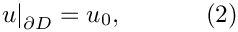 where the Peclet number, |
![\[ \mbox{Pe}\ \sum_{i=1}^2 w_i \left(x_1,x_2\right) \frac{\partial u}{\partial x_i} = \sum_{i=1}^2 \frac{\partial^2u}{\partial x_i^2} + f(x_1,x_2), \ \ \ \ \ \ \ \ \ \ (1) \]](form_0.png)
![$D =\left\{ (x_1,x_2) \in [0,1] \times [0,2]\right\}$](form_1.png) , with Dirichlet boundary conditions
, with Dirichlet boundary conditions  the boundary values,
the boundary values,  , the source function 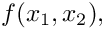
, the source function 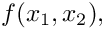  are given.
are given.
We choose the forcing function and the boundary conditions such that
![\[ u_0(x_1,x_2) = \tanh(1-\alpha(x_1 \tan\Phi - x_2)), \ \ \ \ \ \ \ \ \ (3) \]](form_7.png)
is the exact solution of the problem. For large values of 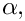 the exact solution approaches a step, oriented at an angle  against the
against the  axis.
axis.
In the computations we will impose the "wind"
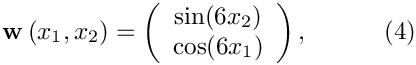
illustrated in this vector plot:

The graph below shows a plot of the solution, computed at various levels of mesh adaptation, for 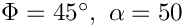 and a Peclet number of 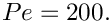

More interesting is the following plot which shows the solution for the same parameter values and boundary conditions, but for a zero forcing function, 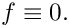

The plot nicely illustrates the physical effects represented by the (unforced) advection diffusion equation. If 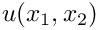 represents the concentration of a chemical that is advected by the velocity field 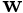, while being dispersed by molecular diffusion, the advection-diffusion equation describes the steady-state concentration of this chemical. In this context the Peclet number is a measure of the relative importance of advective and diffusive effects. For very small Peclet number, the concentration is determined predominantly by diffusive effects – as 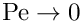, the advection diffusion equation approaches the Poisson equation. Conversely, at large values of the Peclet number, the concentration is determined predominantly by advective effects. The chemical is "swept along" by the flow and diffusive effects are only important in thin "boundary" or "shear" layers in which the concentration varies over short lengthscales. These can be seen clearly in the most finely resolved solution above.
The driver code
Overall, the structure of the driver code is very similar to that in the corresponding Poisson example. The only difference is that we have to specify function pointers to the source and the "wind" functions, which are passed to the problem constructor. We create the problem, perform a self-test, set the global parameters that affect the solution and solve the problem using oomph-lib's "black-box" adaptive Newton solver.
Global parameters and functions
The specification of the source function and the exact solution in the namespace TanhSolnForAdvectionDiffusion is similar to that for the Poisson examples. The only difference is the inclusion of the Peclet number and the "wind" function.
The problem class
The problem class is very similar to those used in the corresponding Poisson examples. The only change is that we use the function Problem::actions_before_adapt() to document the progress of the automatic spatial adaptation. For this purpose, we store a DocInfo as private member data in the Problem. This allows us to increment the counter that labels the output files, accessible from DocInfo::number(), whenever a new solution has been documented.
The Problem constructor
The constructor is practically identical to the constructors used in the various Poisson examples. We specify the output directory in the Problem's DocInfo object, create the mesh and an error estimator, and apply the boundary conditions by pinning the nodal values on the Dirichlet boundaries.
We complete the problem setup by passing the function pointers to the source and wind functions, and the pointer to the Peclet number to the elements. Finally, we set up the equation numbering scheme.
Actions before solve
As before, we use the Problem::actions_before_newton_solve() function to set/update the boundary conditions.
Post-processing
The function doc_solution(...) is identical to that in the Poisson example. We output the solution, the exact solution and the error.
Comments and Exercises
- Explore the change in the character of the solution of the unforced problem when the Peclet number is slowly increased from 0 to 200, say. Note how at small Peclet number, strong diffusive effects smooth out the rapid spatial variations imposed by the boundary conditions. Conversely, at large values of the Peclet number, the behaviour is dominated by advective effects. As a result, in regions where the "wind" is directed into the domain, the value of
 set by the Dirichlet boundary conditions is "swept" into the domain. In regions where the "wind" is directed out of the domain, the value of "swept along" by the flow in the interior "clashes" with the value prescribed by the boundary conditions and the solution adjusts itself over a very short length scale, leading to the development of thin "boundary layers".
set by the Dirichlet boundary conditions is "swept" into the domain. In regions where the "wind" is directed out of the domain, the value of "swept along" by the flow in the interior "clashes" with the value prescribed by the boundary conditions and the solution adjusts itself over a very short length scale, leading to the development of thin "boundary layers". - Explore the character of the solution on coarse meshes at large and small Peclet numbers. Note how at large Peclet numbers the solution on the coarse meshes displays strong "wiggles" throughout the domain. These only disappear once the mesh adaptation fully resolves the regions of rapid variation. We will explore this issue further in another example.
Source files for this tutorial
- The source files for this tutorial are located in the directory:
demo_drivers/advection_diffusion/two_d_adv_diff_adapt/ - The driver code is:
demo_drivers/advection_diffusion/two_d_adv_diff_adapt/two_d_adv_diff_adapt.cc
PDF file
A pdf version of this document is available.